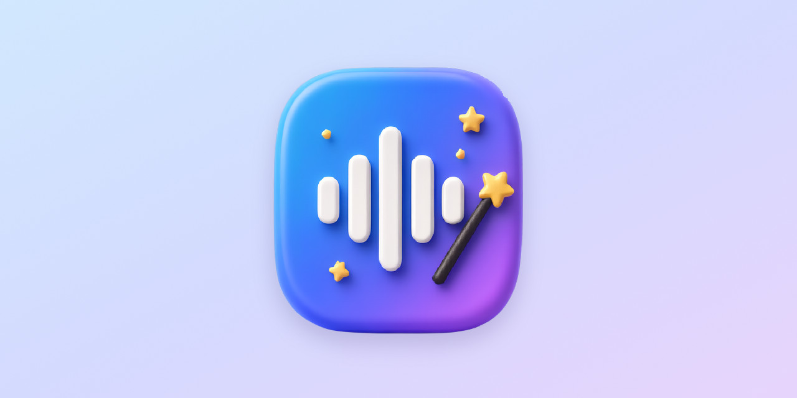
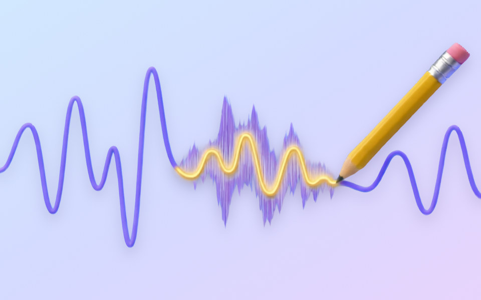
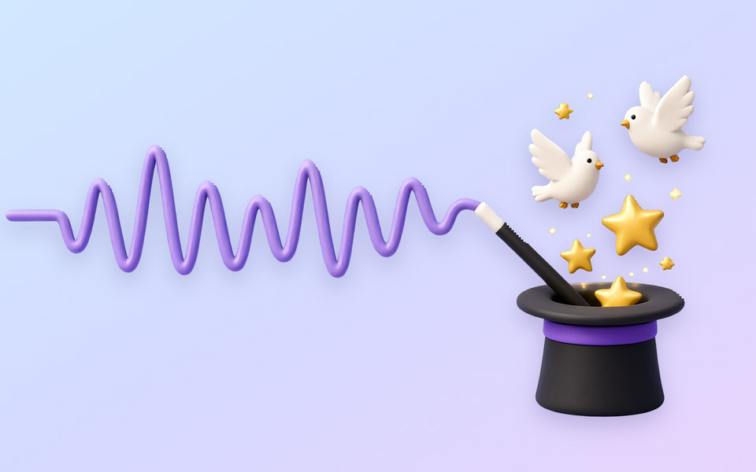

Cadabra 视觉语言
把你的声音变成魔法：一条声波从左边进来，经过魔法，右边变出好东西，舞台是 logo 渐变放大、调淡后的背景板。
品牌色 Brand
天蓝 Sky
#47A3FBlogo 渐变的左上角靛蓝 Indigo
#546BFA渐变的中段 / 起点紫 Violet
#9E52F2渐变的终点强调紫 Accent
#6A5CF5链接、小处强调墨色 Ink
#17142B正文文字logo 渐变 天蓝 → 靛蓝 → 紫：App 图标、favicon、导航小图标、菜单栏
品牌渐变 靛蓝 → 紫：按钮、标题强调色
插画色 Illustration
舞台天蓝 Stage sky
#D1E8FE背景左上角舞台靛蓝 Stage indigo
#D4DAFE背景中间舞台紫 Stage violet
#E7D4FC背景右下角黏土紫 Clay purple
#8B74E8声波、道具浅紫 Lilac
#C9BCF5淡化、噪声的部分魔法金 Magic gold
#F7C548星星、修正后的线魔法黑 Wand black
#2A2238魔法棒、帽子纯白 Cloud white
#FFFFFF声波条、鸽子、卡片舞台背景：logo 渐变的放大淡化版，左上 #D1E8FE → 中 #D4DAFE → 右下 #E7D4FC（三种 logo 色各混 75% 白）。不用别的背景色，不做深色场景。铅笔黄、橡皮粉、植物绿这类自然色只能小面积出现。
Logo
- 6 根高低不一的白色细声波条（沿用最早 logo 的波形），居中；右下一根直的魔法黑魔法棒，可以和声波条有一点重合、棒头一颗金星，周围几颗小金星和小圆点，底是 logo 渐变。
- 所有地方都用同一个：App 图标、菜单栏、App 里的小 logo、favicon、网站导航，没有简化版。App 图标、菜单栏和 Cadabra 主题用 logo 渐变；其他主题在 App 里用同一个图形，换成各自主题的强调色。
- 以代码里的
MagicMark为准，网站的 SVG 照它的几何形状画。
录音条 Recording bar
- Cadabra 主题跟随系统：深色模式是深色底，声波按 logo 渐变从天蓝过渡到紫，白字，金星代替红点；浅色模式用背景板的淡色渐变当底，黏土紫声波，墨色字，金星。
- 其他主题保留各自的录音条配色。
插画 Illustrations



- 画法：柔和的黏土 3D，哑光带一点高光，圆角；光从左上来，地面有柔和的投影；没有颗粒和纹理。
- 构图：一张图只讲一件事，从左往右读：左边是你说的话（黏土紫的声波），右边是变出来的东西（金色、白色）。
- 连接要连续：一样东西流进另一样（声波接进魔法棒、光从按键升起），接口不能有缺口、折角或错位。
- 不要：图里的文字、人和手、别的产品的 logo。
- 尺寸：博客图按 1280×800 生成，发布成 960×600 JPG；banner 1280×640。
元素 Elements
尽量复用这些元素，不另外发明。新图里用到某个元素时，把已定稿、带这个元素的图当参考图给模型，画出来才一致。
- 声波（你说的话）：细而光滑的哑光黏土管，黏土紫 #8B74E8，粗细约为画面宽度的 0.95%（1280 宽时约 12 像素）。八九道弯，高低不一像说话，围绕中线上下平衡，从左往右走。
- 噪声波（听错的话）：密集、尖刺状的噪声，浅紫 #C9BCF5，比声波淡。
- 光（Cadabra 变出来的东西）：一条发光的光线，接近白色的亮芯，外面一层柔和的魔法金光晕；不是实心的金色管子。起点就在输入到达的地方（按键上、声波末端），终点在它去的地方（机器人、铅笔尖）。
- 魔法棒：笔直、坚硬的魔法黑棒子，白色棒头，绝不弯曲。声波接进它的尾端，棒头指进帽子。
- 魔术帽：魔法黑，紫色帽带，里面飞出金色黏土星星和白鸽。
- 铅笔：普通的黄色木头铅笔，粉色橡皮，没有脸和手脚。
- 键盘：一把完整的小键盘，黏土紫的机身、浅色键帽。Agent 键是其中一个发金光的键，上面一颗白色小星星；不要画成一个巨大的单独按键。
- 机器人：白色，深色面罩脸，青色眼睛，粉色腮红，在白色窗口里，窗口有紫色标题栏。
出图流程 How pictures are made
- 物体和背景分开：模型看不懂色值，背景交给它会跑色。只让模型画物体（透明背景），再用
tools/stage.py合成到背景板母版上，加柔和投影，并抖动去掉条带。 - 整张重画，不要局部修补：要改一张图，就带着参考图把整张重新画；局部修改会跑偏，反复修改还会起噪点。
- 量，不要靠眼睛：出图后量声波的粗细和颜色，对照上面的规则；
tools/clay_purple.py能把声波精确调到黏土紫，保留明暗。 - 博客卡片：配图 16:10，简介要短（中文约 60 字、英文约 160 字符），卡片不能比图高。